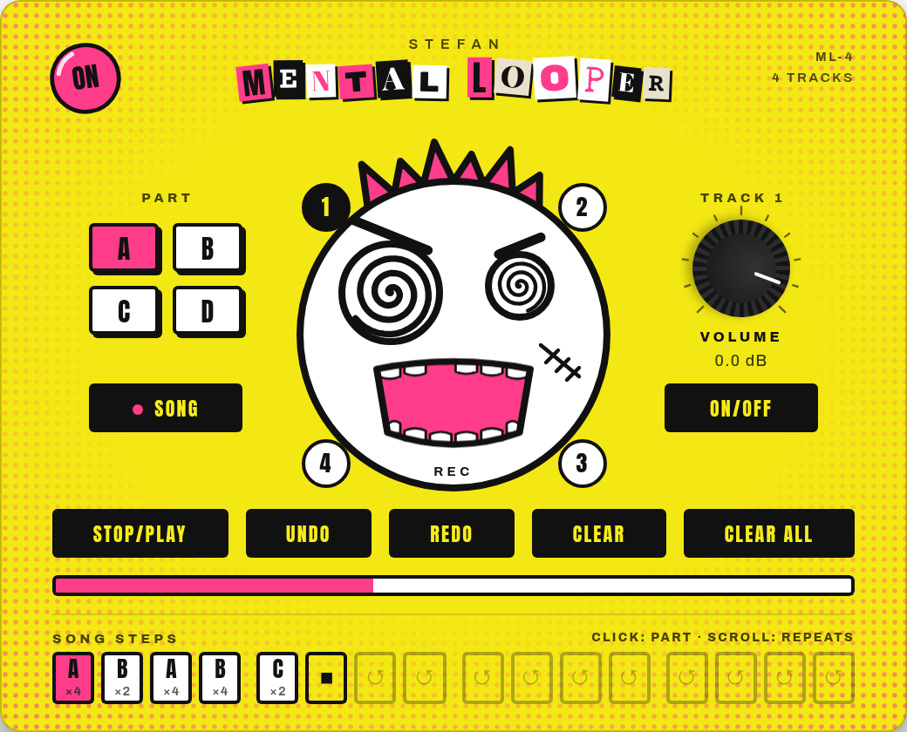

For MOD Dwarf and MOD Desktop. Play free, and the first loop you record sets the length for every track, or set Sync to Bars to lock the loops to MOD’s tempo, with a click. Four parts and a 16-step song arrange what you record, and a whole piece saves to one of 16 slots.
| Control | What it does (footswitches B and C and all three knobs act on the selected track) |
|---|---|
| Knob 1: Track | Picks track 1 to 4. It does not touch the sound; it chooses what B, C and the other knobs act on. |
| Knob 2: Redo | Press the knob to redo the layer you just undid on the selected track (assign Redo to it in MOD-UI). The label reads REDO, or - when there is nothing to redo. Muting a track is on C. |
| Knob 3: Volume | Playback level of the selected track, −60 to +6 dB, default 0 dB. It never changes what is recorded, so undo stays exact. |
In MOD-UI, B’s port is Rec/Undo and C’s is Stop/Clear. Both are press-and-release switches: outside MOD, map them to a momentary control such as a MIDI footswitch.
The web pedal (MOD-UI): click the mouth to record, as B does. Holding it does not undo; use UNDO, which can also remove the first layer. Click a track number to select it, A–D for a part, and SONG to play the song steps. A step: click it to change its part; scroll or drag up and down on it to change its repeats. The keys are the same actions as buttons (REDO, ON/OFF and CLEAR for the selected track, CLEAR ALL), plus STOP/PLAY (stops with the Stop Mode, or starts again from the top). The head shows what the looper does: its eyes turn once per loop, its mouth screams while any track records or overdubs and trembles half open while a REC waits (Auto Rec or Sync), and the bar under the keys shows where the selected track is.
| Track is | Press B | Shows |
|---|---|---|
| Empty | starts recording | REC |
| Recording | closes it, plays | PLAY |
| Playing | starts overdubbing | DUB |
| Overdubbing | back to playing | PLAY |
| Stopped | starts every track again from the top | PLAY |
| Auto Rec on, track empty | arms it: recording starts on your first note | ARM |
| Any, double-tap | goes to the next part and records the selected track there (see New part) | REC |
Hold B (for the hold time) to undo the newest layer of the selected track. Each hold undoes one more layer, and never the first one: with only the first recording left, a hold does nothing. A hold never aborts a recording. The press that starts the hold counts as a tap first, so the hold deals with what that press did:
| The press | At the hold |
|---|---|
| started an overdub | that overdub is dropped, then the layer before it is undone |
| closed an overdub | that overdub is undone |
| queued a wait for a bar line (Sync) | the wait is cancelled, then one layer is undone |
| started or closed a recording | the recording stays and nothing is undone (with After Rec set to Rec > Dub, the overdub the closing press started is dropped) |
| armed an empty track (Auto Rec) | the arm stays |
| started everything from a stop | it plays on, and one layer is undone |
Redo (knob 2) brings back only the layer of your last hold, because each hold starts an overdub, and a new overdub forgets what could be redone. A hold does nothing if the part changed since you pressed.
An arm is cancelled by B on the armed track, a press on C with that track selected, a stop, Clear on the armed track, Clear All, or turning Auto Rec off. B on another track cancels the arm and then does that track’s own action.
Set After Rec to Rec > Dub to go from recording straight into overdubbing. The light shows the track’s state: white empty, blinking red recording, blinking green overdubbing, green playing, slowly blinking red armed, and off while stopped.
New part. Press B twice within the Double-Tap window and Mental Looper goes to the next part (D goes to A). If that part is empty, the tracks below the selected one are copied into it, the selected track records from the new part’s first beat, and the tracks above it stay empty. Close the recording with B, as any recording onto a loop. With Auto Rec on, the selected track is armed instead and records from your first note.
Example: tracks 1 to 3 play in part A and track 3 is selected. Double-tap B. At the end of the pass, part B starts with tracks 1 and 2 playing as they were in A, and track 3 recording from the first beat. Track 4 is empty. If the next part already holds audio, the double-tap is only a switch to it, as turning Part would be: nothing is copied or recorded.
The second press first deals with what the first press did, as a hold does:
| The first press | The second press |
|---|---|
| started an overdub | cancels it: nothing is kept |
| closed an overdub | the overdub stays |
| started a recording onto the loop, or the first recording | aborts it: the track is empty again |
| closed a recording | it stays (with After Rec set to Rec > Dub, the overdub the closing press started is cancelled) |
| closed another track’s take and started this one (one-press handover) | the other take stays closed, and this one’s start is undone |
| armed the track (Auto Rec), or waited to start a recording (Sync) | cancelled, or aborted if it already started recording |
| waited to close the first recording (Sync) | the loop still closes on its bar line, and the switch comes at the end of that first pass |
With Sync, if the first press handed over from another track’s recording onto a loop or an overdub, that take closes at once and is kept. A first recording’s waiting close still closes on its bar line.
Two quick presses are always a double-tap. If you close a loop and press B again within the Double-Tap window to start an overdub, you go to the next part instead. Two ways round it: set After Rec to Rec > Dub, so one press closes the loop and starts the overdub; or lower Double-Tap (down to 150 ms), so a double-tap needs quicker presses.
The wait. The switch comes at the end of the current part’s pass. Until then B blinks fast red and its label reads REC, the screen shows A>B blinking, and the web face shows its waiting look. A tap on B or a press on C cancels the new part and its recording and does nothing else; a second press within the window after that is a double-tap again. Turning Part to another part makes it a plain switch to that part. Turning Track does not move the recording. Any stop (Stop/Play, MOD’s stop, a double-tap on C, End of loop or Fade) cancels it, so a double-tap on C leaves you in the current part, stopped. Clear All cancels it too. When the next part held audio, the wait is a plain switch and B and C act as usual.
While stopped. The first press starts everything from the top; the second replaces that start. The loops stop again, the next part becomes the current one at once, and playback starts from its top, with the new recording (or arm) starting with it. With Sync that start waits for the bar line, and if you cancel the wait the looper stays stopped in the new part. If the next part holds audio, it plays with no recording. With Song on, the double-tap turns Song off.
With nothing recorded. The first press starts the first recording and the second aborts it. The looper moves to the next part at once and records there on the selected track.
The copies and the new recording count as changes, so a later Load asks LOAD n?. A first press held past the hold time is an undo and starts no double-tap, and holding the second press does nothing more. A press on C between the two presses makes the second a new press. If the part changes between the presses, the second press is a new first press.
One-press handover. Press B on another track while one is recording: the running one closes and the new one starts, in the same press. This is how you set the loop length from track 1 and start track 2 without a gap.
Long tracks. Record a track over an existing loop and keep playing past the loop end: it becomes 2, 3 or more loops long, up to 5 minutes. Press B to stop recording. The length rounds to whole loops, counted from when you started that track. If you started a little before a loop’s top, within Snap (a quarter loop by default), they count from that top instead: the track begins there, and what you played before it ends the track, leading into its beginning. Press within Snap after a whole number of loops and it rounds down: what you played past that point lands on top of the track’s beginning, where it falls in time. Press later and it rounds up, and the rest of the last loop is silent. Less than one loop gives one loop. A long track stays locked to the first loop. Overdub, undo and redo, on/off, volume and clear work over its whole length. Restart (B, or a double-tap on C while stopped; a tap on C starts the selected track alone) begins the longest track from its start, and every other track keeps its alignment.
C turns sound off when you press and back on when you lift your foot, so a hold never lets a track sound before it clears. It acts on the selected track. While the loops run:
| Gesture | Effect |
|---|---|
| Press, track on | Turns it off at once. The label always shows the selected track’s current state: ON n or OFF n. |
| Release before the hold time, track was off | Turns it on. |
| Hold | At the hold time the selected track clears and is set back on, so your next recording on it is heard. You cannot undo this. |
| Double-tap | Puts the on/off back as it was before the first tap, and stops every track (see Stop Mode). During End of loop or Fade it stops at once; if the stop has already finished, it only puts the on/off back. |
| Empty selected track | A tap does nothing (the label reads -). A double-tap still stops. |
While stopped, the label reads PLAY n and C’s light is red:
| Gesture | Effect |
|---|---|
| Tap | Starts from the top with only the selected track on. The other tracks that hold audio are turned off; empty tracks keep their setting, so a later recording on them is heard. With Song on, it starts from step 1. An empty selected track: nothing. |
| Double-tap | Starts everything from the top, as B does. The tracks the first tap turned off come back on. |
| Hold | Clears the selected track at the hold time, and keep holding to twice the hold time to clear everything, including the loop length. It also works with an empty track selected. Nothing starts. You cannot undo this. |
With Sync, a tap that starts playback may wait for the bar line (WAIT). If you cancel the wait (B, or a press on C), the tracks it turned off come back on. A second press within the Double-Tap window turns them back on, and everything starts on the line.
| During a take | Effect |
|---|---|
| First recording, tap | Aborts it, after the Double-Tap window has passed and only if it is still the first recording (if B closed the loop meanwhile, nothing is aborted). The track is empty again. |
| First recording, double-tap | Keeps it as the loop, but stops silently, whatever the Stop Mode. Press B to hear it from the top. |
| First recording, hold | Aborts it. |
| Recording or overdubbing on the selected track | The press closes the take (it is kept) and turns the track off. Another track’s take is not touched. |
A press on C while the selected track waits for a bar line or is armed (Auto Rec), or while a start of everything is pending, cancels that and does nothing else. Another track’s wait or arm is left alone.
A gesture belongs to the track and the part it was pressed on. Turning Track in the middle does not move it; if the part changes in the middle, the rest of the gesture is dropped. A press on B between two presses on C makes the second a new press, not a double-tap.
One overdub is one layer, however many passes it ran. Overdubs where you played nothing are dropped, so they cost no undo step. Recording or overdubbing again forgets what you could still redo.
Mental Looper outputs only the loops. Your live sound is not passed through, so run the dry signal around the pedal on the pedalboard (a parallel path) and mix the two. If you run the pedal in series instead, turn Dry up: it adds your input to the output at that level, with no delay (0 dB is your input as it comes in). Bypass mutes the loops, but they keep running in time and pick up where they are when you switch back on. While bypassed you get the dry signal at the Dry level (none when Dry is at the bottom, off).
The loop point is click-free, and a note still ringing when you close the loop carries into the next pass. The first loop can be up to 5 minutes. The pedalboard does not hold the loops; save them as a piece (see Saved pieces). Each track’s on/off and volume are also in the web interface (On 1–4, Volume 1–4).
Mental Looper offers a Loop display widget. In Starless’ Display dialog, put it in the column above knob 1; it replaces knob 1’s own text and keeps the footswitch labels visible.
It shows the selected track and its state (ARM when that track is armed), a mark per track (a blinking dot for an armed track), and a bar that fills once per pass (elapsed time during the first recording). Under each mark a small number counts the layers you hear on that track: the recording plus each overdub still in, so an undo takes one off (it needs an area at least 33 pixels tall). For a long track the bar covers the whole track, with a small tick at each loop (left out when there are too many), and while a track records past the loop, small dots count how many times the loop has come round while it records. It needs an area at least 27 pixels tall for the full layout; a shorter area shows the bar only. While stopped it shows STOP (blinking while a stop is still finishing), and B’s label reads PLAY. C’s label reads ON n or OFF n for the selected track while running, PLAY n while stopped, and - for an empty selected track. C’s light is green while the loops play with the selected track on (blinking while a stop is finishing), red while stopped, and off when the selected track is off or empty.
Without the widget everything still works, just without the screen. On stock MOD OS the volume knob can be one step off right after you change track.
Set Sync to Bars and Mental Looper follows MOD’s tempo and transport. With Sync Off nothing changes. With no usable tempo from the host, presses act at once, as with Sync Off.
Bar lines. Recording starts on a MOD bar line, and the first loop closes on one, so loops are whole bars. A press up to 150 ms after a line counts as on the line; any other press waits for the next line. While it waits, B blinks fast (red before a recording, green before the first loop closes or playback restarts) and the screen shows WAIT. Press B again, or press C with that track selected, to cancel. Starting playback with B while MOD plays waits for the next bar line the same way. With Auto Rec, a note up to 150 ms after a bar line starts at that line; any other note waits for the next line.
MOD stopped. Your first press sets bar 1. Once a loop exists, presses use the loop’s own bars, counted from its top. A loop recorded with Sync Off or with no tempo counts as one bar, so B on an empty track can show WAIT for up to a whole loop.
MOD’s play and stop. When MOD starts playing, the loops start from their top on the bar line (if MOD starts mid-bar, loops that are playing jump on the next line with no WAIT shown; stopped loops show WAIT until the line). If you are recording or overdubbing, that take closes first and every track jumps to its start with a short crossfade. During the very first recording, MOD’s play is ignored. When MOD stops, the loops stop too, following Stop Mode. If MOD stops during the first recording, or you stop it with a double-tap, you keep the whole bars recorded so far; less than one bar is discarded.
Tempo changes. Loops keep their length, so if the tempo changes after you record they drift from the drums.
Click and Length. With Click on, Mental Looper ticks on MOD’s beats while MOD plays, beat 1 higher and louder, on its own Click output: route that to your headphones or a second output to keep it out of the mix. With MOD playing, B waits for the next bar line, so the click is your count-in. Set Length to a number of bars and the first loop closes by itself on that bar line, as a press would; B before then closes it as usual.
Mental Looper has four parts, A to D. Each part is its own set of four tracks, so you can record a verse in A and a chorus in B. The Track, Redo and Volume knobs act on the current part. The loop length L is set once, by the first recording, and every track in every part is a whole multiple of it. A part’s pass is its longest track, so parts can last a different number of Ls.
Copy on entry. Switch to an empty part and it starts as a copy of the part you left: every track’s audio as heard, with its on/off and volume, one layer each (no undo history). Clear what you do not want. This is what the Part knob does; a double-tap on B copies only the tracks below the selected one (see below).
Switching. Turn Part and the switch waits for the end of the current part’s pass (its longest track). The screen shows A>B blinking, and the knob shows the queued part until the switch. The switch is a crossfade of a few ms on both sides, so the new part’s downbeat keeps its attack.
Switching by foot. Double-tap B to go to the next part (D goes to A) and layer a new one: if it is empty, the tracks below the selected track are copied, the selected track records from the new part’s first beat, and the tracks above stay empty. If it holds audio, you only switch to it. It turns Song off, as turning Part does. See Footswitch B.
The song is up to 16 steps. Each step has a part (A–D, Loop or Stop) and repeats (1–16). A repeat is one pass of that part. At the end of the last repeat the song moves to the next step. Loop sends the song back to step 1 (so it repeats the part for ever only when that is the song’s only step); Stop stops with the Stop Mode, and the song goes back to step 1 with Song still on.
| Knob subpage | Controls |
|---|---|
| 1 | Track, Redo, Volume (current part). |
| 2 | Part (A–D) and Song (off/on). |
| 3 | Step (1–16), Step Part (A–D, Loop, Stop), Step Repeats (1–16). |
The Loop widget labels the track with its part (A1). While the song plays it shows the position (3/6) instead of PLAY or --; REC, DUB, WAIT, ARM and STOP still show. In Starless’ Display dialog, also add the Song widget (symbol song_steps) and place it on knob subpage 3. It lists the steps with part and repeats, a triangle under the playing step and a bracket under the step you are editing. The arrangement is saved with the pedalboard; the loops are saved as a piece (next section).
All parts share one pool of memory, and loops win over undo history. When memory is full, a recording closes as at the 5-minute limit, an overdub punches out (it stays in the loop but cannot be undone), and the screen shows FULL (it wins over every other label). FULL stays until about a second of memory is free again; clearing a track gives its memory back.
A piece is everything you hear: all four parts with their four tracks, each track’s volume and on/off, the loop length, the arrangement and the current part. You can keep 16 pieces in numbered slots, save the one you built and load another between songs, all on the Dwarf. Undo history is not saved.
A slot is a folder, /data/user-files/Audio Loops/Mental Looper/01 to 16. It holds one 32-bit float mono WAV per recorded track (A1.wav to D4.wav) and a small text file, piece.txt. Copy a slot folder to a computer to back it up, or into another slot or Dwarf with MOD’s file manager. A slot you copy in or delete shows on the screen within about a second. On a desktop host the folder is $MOD_USER_FILES_DIR/Audio Loops/Mental Looper, else $HOME/.mental-looper/Audio Loops/Mental Looper. The Windows desktop build has no saved pieces.
Press footswitch A to go to page 2 of the Dwarf.
| Page 2 | Controls |
|---|---|
| Knob 1: Slot | Picks slot 1 to 16. |
| Knob 2: Save | Press to save the piece to the selected slot. |
| Knob 3: Load | Press to load the selected slot. |
Footswitches B and C do nothing on that page, so you can assign Save and Load to them instead. In Starless’ Display dialog, add the Pieces widget (symbol piece_slots) above the knobs of page 2. It shows the 16 slots, which ones hold a piece, the selected slot and the loaded one, and a status line. After a load, LOADED M stays at the right of the status line while there is room. The Loop widget shows LOAD while a load runs.
Save works at any time, also while the loops play; the sound is not touched. If a recording or overdub is running, the save waits until it closes. Saving a piece with nothing recorded does nothing. A save that fails leaves the slot’s old piece as it was. Wait for SAVED 3 before you change pedalboards: a pedalboard change during a save cancels it, and the slot keeps its old piece.
Save on a slot that already holds a piece asks first: the screen shows SAVE 3?, and a second Save within about 2 seconds confirms. Anything else cancels. Save on an empty slot writes at once. A second Save while one writes is ignored.
Load is for between songs. It stops the loops, reads the piece and leaves it stopped at the start. B or a double-tap on C starts everything, and a tap on C starts the selected track alone; with Song on, it plays the arrangement from step 1. Every track has one layer and no undo history. Load of an empty slot does nothing.
If you have changed the piece since the last save or load, or a recording or overdub is still running, Load asks first, unless nothing is recorded: LOAD 3?, and a second Load within about 2 seconds confirms.
While a piece loads, presses (B, C, Stop/Play and so on) and the controls the piece sets (Part, Song, the steps, On 1–4, Volume 1–4) are ignored. Any other setting you turn during a load (Dry, Track, Length, Sync, Click, Slot) takes effect when it finishes. After the load, the controls show the piece’s values. Length stays as it is.
A piece that cannot be loaded (a missing or unreadable file, another sample rate, a track longer than 5 minutes, too big for memory) leaves the current piece in place where that can be checked first. A read error later leaves every track empty.
The pedalboard remembers the slot you saved or loaded last, when you save the pedalboard. Loading the pedalboard loads that piece, and sets Slot to it. If it cannot load, the pedalboard comes up with no piece and the screen shows why.
With Sync on, a piece stores the tempo it was recorded at. After a load the screen shows it (120 BPM 4 BARS), so you can set MOD’s tempo to match; a plugin cannot do that. Without a stored tempo it shows only the bars (4 BARS, 1 BAR). Loops keep their length, so another tempo drifts.
A status marked Stays remains until you turn Slot or press Save or Load, so you still see it when you come back to page 2. A question shows for about 2 seconds, SAVED 3 for about 3.
| Shows | Meaning |
|---|---|
3 FULL, 3 EMPTY | The selected slot holds a piece, or not. |
SAVE 3? | Save again to overwrite slot 3. |
LOAD 3? | Load again to throw away the changes and load slot 3. |
SAVING, SAVED 3 | A save is writing; it is done. |
LOADING 40% | A load is reading. |
120 BPM 4 BARS | The load is done: the piece’s tempo (if it has one) and bars. Stays. |
EMPTY | Load of an empty slot. Stays. |
DISK FULL | The save did not fit on the disk. Stays. |
SAVE ERROR | The save failed for another reason. Stays. |
TOO BIG | The piece does not fit in memory; the current piece is kept. Stays. |
LOAD ERROR | The piece could not be read. Stays. |
| Setting | Range | Default | What it does |
|---|---|---|---|
| After Rec | Play / Dub | Rec>Play | What closing a first recording leads to. |
| Dry | off, −60…+6 dB | off | Adds your dry input to the output at this level, for series use. The bottom of the range is off. |
| Tail | 0–500 ms | 50 ms | Ring-out after closing the first loop, blended into its start. Even at 0 it is a short 3 ms crossfade, so the loop point never clicks. Too long can double the first note. |
| Hold Time | 200–2000 ms | 500 ms | How long to hold B (undo) or C (clear). Twice this, held on C while stopped, clears everything. |
| Undo Budget | 16–400 MB | 200 MB | Memory for undo history. When it runs out the oldest layers stay in the loop but can no longer be undone. |
| Overdub earlier by | 0–30 ms | 0 ms | Writes overdubs a little earlier. Raise it if your overdubs land slightly late. |
| Trigger Latency | 0–50 ms | 3 ms | Backs the start of a recording up to make up for the late footswitch press, so the first attack is kept. |
| Stop Mode | Instant / End of loop / Fade | Instant | How a double-tap on C stops: at once, at the end of the pass (End of loop waits for the longest track to finish its pass, which can take a while; STOP blinks meanwhile), or with a fade. A second double-tap during End of loop or Fade stops at once. B during one of these cancels the stop. |
| Fade Time | 0.5–10 s | 3 s | How long the Fade stop takes. |
| Auto Rec | off / on | off | B on an empty track arms it instead of recording. An arm is cancelled by B on the armed track, a press on C with that track selected, and so on (see Footswitch B). Recording starts when you play past the Threshold, and keeps the 10 ms before it. |
| Threshold | −60…−10 dB | −40 dB | How loud your first note must be to start an armed recording. |
| Double-Tap | 150–600 ms | 400 ms | The window for a second press on B and on C. |
| Sync | Off / Bars | Off | Bars: recording starts and the first loop closes on MOD’s bar lines, and the loops follow MOD’s play and stop. See Tempo sync. |
| Click | off / on | off | With Sync on and MOD playing, a tick on each beat on the Click output. |
| Click Level | −40…0 dB | −10 dB | How loud the click is. |
| Length | Free, 1–16 bars | Free | With Sync on, the first loop closes by itself after this many bars. |
| Snap | 0–50 % | 25 % | How far off a loop’s top, in % of the loop, a long track’s start or stop may be and still count as on it (see Long tracks). At 0 nothing snaps: a track counts from its start, and any overshoot adds a loop. |
| Part | A–D | A | The current part. Changing it queues a switch at the end of the pass. |
| Song | off / on | off | Plays the steps in order. See Song parts. |
| Step | 1–16 | 1 | The step the next two settings edit. |
| Step Part | A–D, Loop, Stop | A | What the step plays. Loop sends the song back to step 1; Stop stops. A Loop step ignores Repeats. |
| Step Repeats | 1–16 | 1 | How many passes the step plays. |
| Slot | 1–16 | 1 | The slot Save and Load use. |
| Save | press | Saves the piece to the slot. See Saved pieces. | |
| Load | press | Loads the slot’s piece. |